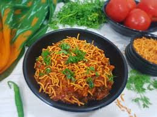

Sev Tamatar Recipe

Rajasthani cuisine
Rajasthani Sev Tamatar Sabji is a delicious curry that comes in very handy when there are no vegetables at home and you still want to make a wholesome meal. This curry is made using juicy tomatoes which are sautéed with desi masalas and served with heaps of thick besan sev.
Ingredients
- Bhujia Sev
- Tomatoes
- Onions
- Ginger Garlic Paste
- Spices (Red Chilli Powder, Turmeric Powder, Garam Masala Powder, Corriander Powder, Salt)
- Cumin
- Green Chillies
- Lemon Juice
Steps
- Heat oil in a pan. Add cumin and crackle them.
- Then add ginger garlice paste & green chilies. Stir and saute for 10 to 12 seconds till the raw aroma of paste goes away.
- Add the chopped tomatoes.
- Stir and then add spice powders - turmeric powder, red chili powder, coriander powder and cumin powder.
- Stir and saute so that the tomatoes get cooked evenly.
- Add Water and let it boil.
- Add Bhujia Sev and let it cook for a minute and then switch off gas and serve